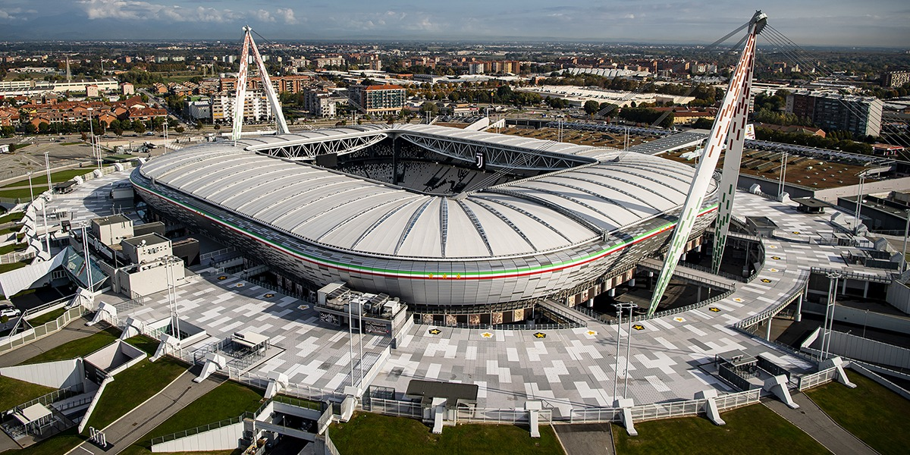
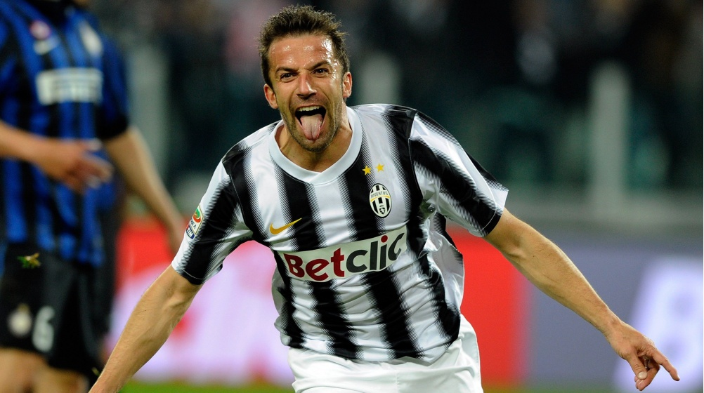

Juventus F.C history
In the 19th century Turin was a small town until the start of factories in the 1870s. As a result of the
wealth of local merchants the first Turin football club, Juventus, was established at the end of the
century. At its establishment, on 1 November 1897, it was called Sport-Club Juventus.
The black and white strips, that today is primarily associated more with Juventus than any other football
club, actually has its background in England and one of the first football clubs, Notts County. At the
beginning of the 20th century, when the team needed to replace the washed out pink shirts, one of their
English players was asked to arrange something from his home country. The shirts that arrive were Notts
County replicas.
In the 1950s and 1960s the foremost company was Fiat and people from the poor southern Italy were moving in
masses to Turin for the work opportunities. Turin became an industrial town and that circumstance has
historically matched well with football success for the local teams.
Allianz Stadium
Juventus home stadium is sponsored by Allianz. It´s capacity is
41.507 seats. It was opened 8 september 2011.

Juventus F.C most legendary player
Alessandro Del Piero is without doubt the most valuable player wearing the black and white shirt.
19 years, 697 games and 288 goals. The team won 6 Seria A titles and 1 Championship league title with
him on the team.


| Place |
Goals scored |
Goals conceded |
Points |
| Milan |
74 |
8 |
56 |
| Inter |
89 |
22 |
54 |
| Napoli |
86 |
17 |
54 |
| Juventus |
77 |
23 |
47 |
| Atalanta |
90 |
30 |
44 |